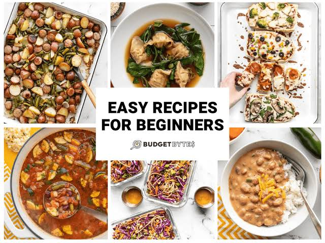
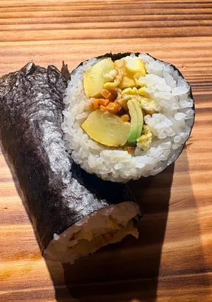
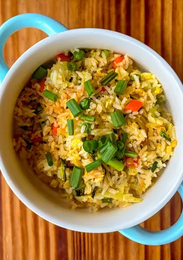
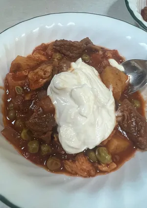

a quick and easy vegetable hand roll great for picnics or lunch on the go. I make these regularly for my kids and they can be customized to everyone’s personal taste. #CookpadApron2026 more....

A delicious and easy-to-make dish perfect for any occasion. more....

Thank u Maria for your lovely delicious recipe and I have changed a few things just to make my own version and it’s bechamalicious 🤭😂🥂…. more....